Cycle Lover キャラクターデザイン原画
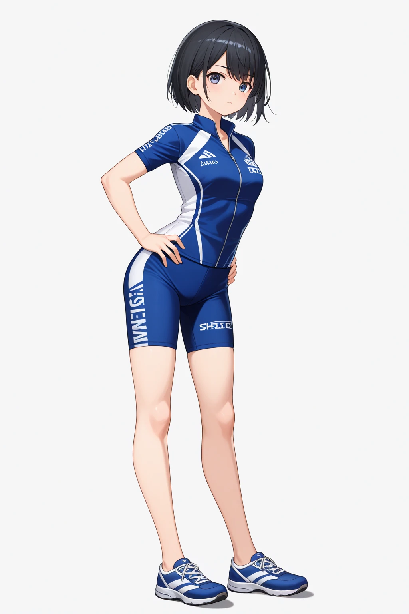
自転車屋の娘
サイクルウェア・全身
スライド 14 / 1024 × 1536 px
hero_bikeshop
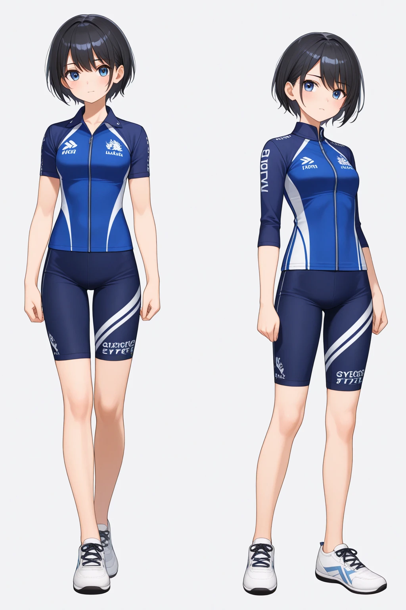
自転車屋の娘
サイクルウェア・2人並びの比較画
スライド 14 / 1024 × 1536 px
hero_bikeshop
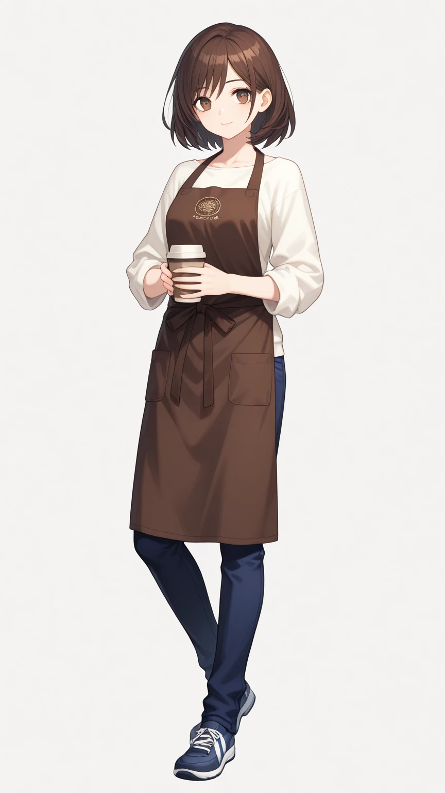
カフェのマスター
エプロン・全身
スライド 16 / 864 × 1536 px
hero_cafe_master
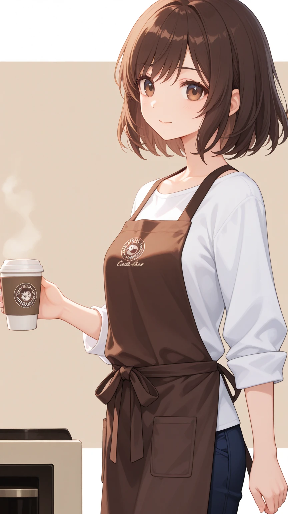
カフェのマスター
エプロン・上半身と背景
スライド 16 / 864 × 1536 px
hero_cafe_master
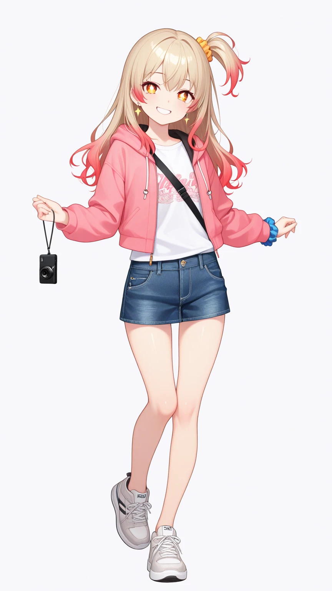
従妹
私服・ピンクの上着
スライド 18 / 864 × 1536 px
hero_cousin
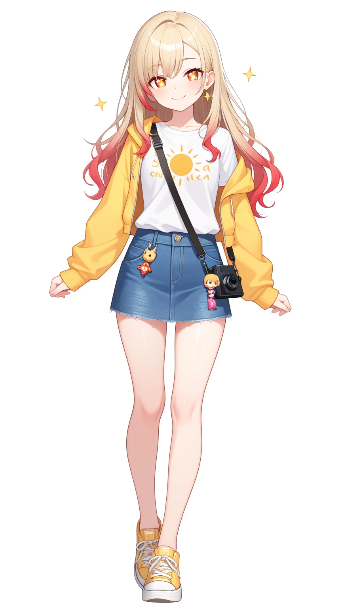
従妹
私服・黄色の上着
スライド 18 / 864 × 1536 px
hero_cousin
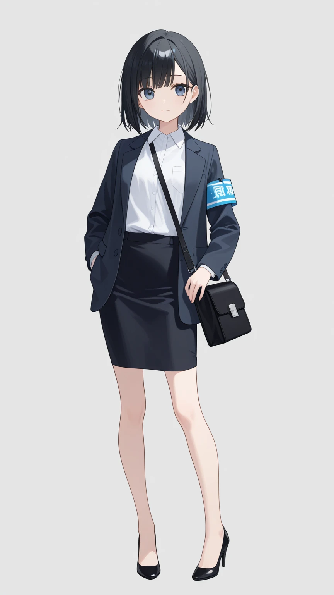
若手女子アナ
仕事着・ジャケットあり
スライド 20 / 864 × 1536 px
hero_announcer
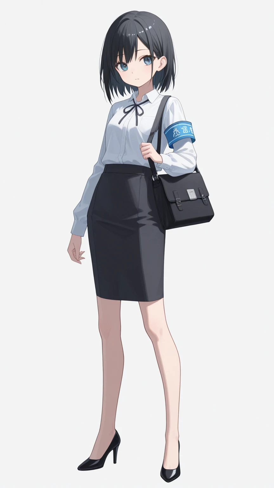
若手女子アナ
仕事着・ブラウス
スライド 20 / 864 × 1536 px
hero_announcer
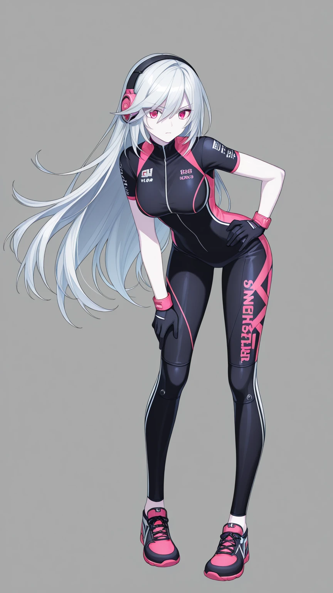
ネットのライバル
オンラインのアバター・銀髪ロング・黒とピンクのサイクルウェア
スライド 22 / 864 × 1536 px
hero_online_rival
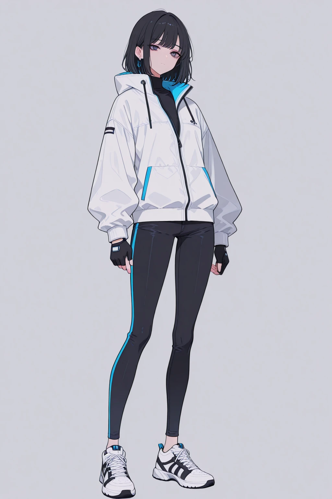
ネットのライバル
現実の姿・黒髪・白いジャケットの私服
スライド 22 / 1024 × 1536 px
hero_online_rival
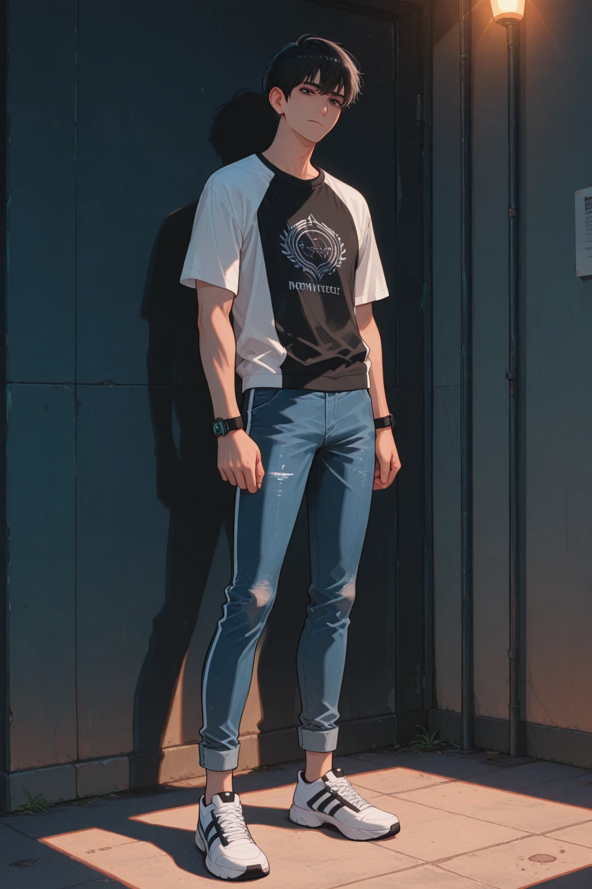
主人公
私服・背景付き全身
スライド 24 / 1024 × 1536 px
protagonist